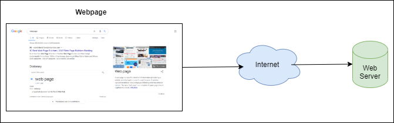

HTTP - Hyper Text Transfer Protocol
HTTP is a protocol which allows fetching of HTML documents over the internet. It enables the communication or data exchange on the web.It is a client-server protocol, means requests are raised by client system(web browser) and responses to those requests are received by client from a server. It is used to not only fetch hypertext documents, but also images and videos or to post content to servers, like with HTML form results. HTTP can also be used to fetch parts of documents to update Web pages on demand.

Web Server, which serves the document as requested by the client. A server appears as a single machine but it might be a collection of different servers. Few Functions of a web server - stores and secures website data,serve client requests, bandwidth controlling to regulate traffic.
Web browsers send get requests to web servers to get html pages back to the web browser. Ex: GET google.html and the browser loads up the html page and shows it to the user. Sometimes, user also posts data to server.Example: When a user wants to login to a particular site like facebook, user inputs a username and a password and these details as posted to a webserver and the server authenticates and recognizes the user and send back the correct html pages for the user.There is also something called cookies which the web browsers send along with the html pages, this is to recognize that a particular request has come from an individual who has already logged in, so the user doesn't have to login again. HTTP is like a language in which the client and the server talks to each other in the form of requests and responses.
HTTPS - Hyper Text Transfer Protocol Secure
HTTPS protocol ensures that that the http requests are secure and protected.
Internet is open and is vulnerable to hackers, where they can snoop or tamper the data being sent to other individuals. For safety, most of the website try to communicate over a safe channel. The information is wrapped inside Secure Socket Layer and Transport layer Security so that the information cannot be tampered or snooped by hackers.
For a secure connection, there is a digital certificate which is verified. If a website tries to establish a secure connection with the help of a faulty digital certificate the browser warns the user accordingly.
HTTPS adds a layer of security for HTTP. HTTPS makes sure that the communication is encrypted, authenticated and integrity is maintained
Encryption: By including SSL/TSL encryption, HTTPS prevents data that is sent over web from being read by hackers. An encrypted session can be securely setup between client and server using shared secret keys.
Authentication: A website SSL or TSL certificate includes a public key that a web browser can use to confirm that information sent by the server have been digitally signed by someone in possession of a corresponding private key. If the website certificate is signed by a public certification authority, the browser will accept it as being verified and shows the content to the user.
Integrity: When data is sent over the web, the web server includes a digital signature which is recalculated on the client-side to ensure that the data is not tampered. Making sure that the data integrity is not compromised.